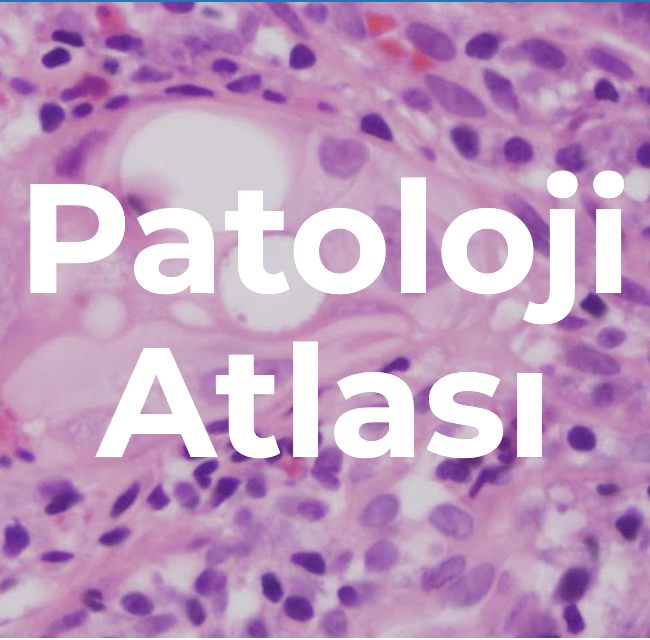

Rutinde Dijital Patoloji
Zorluklar ve Kolaylıklar
2023-09-23
Dijital Patoloji

- Dijital Patoloji İçin Tarayıcı Şart mı?
- Dijital Patoloji Nerede Kullanılıyor?
Dijital Patoloji
Konsültasyon


Dijital Patoloji
Frozen


Dijital Patoloji
Araştırma

Dijital Patoloji
Rutin Tanı

Görüntünün Dijitalleştirilmesi
Patolojinin Verileştirilmesi


Dijital Patoloji Nedir?

Rutinden örnekler

Analitik Süreç


Barkod, Karekod, Datamatrix


Kapama

Content for Tab A
Content for Tab B
Temizlik

Content for Tab A
Content for Tab B
Kalibrasyon

Alışkanlıklar - 2


Navigasyon


Vakanın tümü tarandı mı?

Content for Tab A
Content for Tab B
Teşekkürler
Sonuçta her zorluk bir kolaylıkla beraber geliyor. En iyisi bir işi bitirince hemen diğerine başlamak.
Patoloji Atlası


Örnek Rutin Vakalar
patolojiatlasi.com